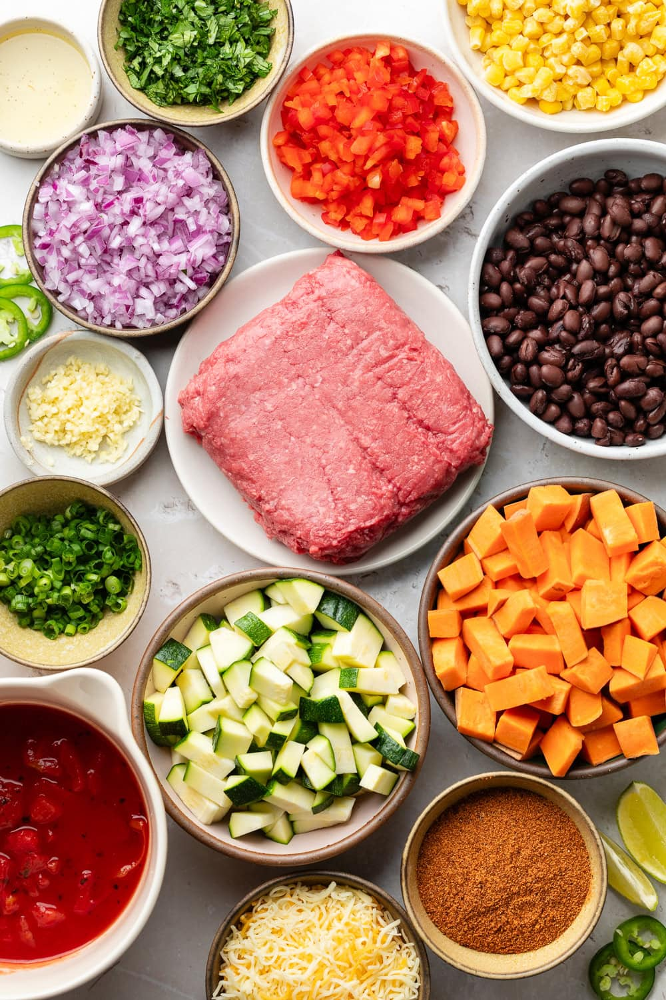
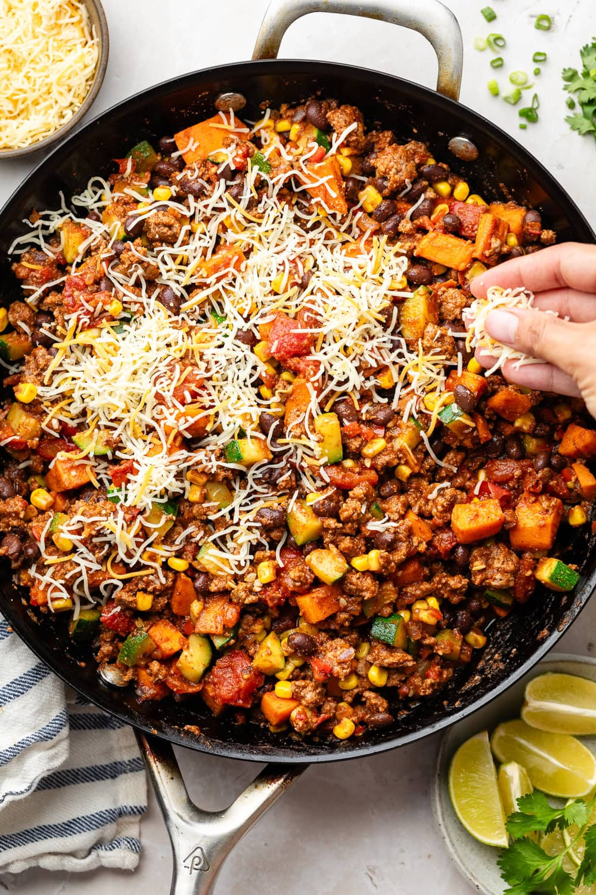
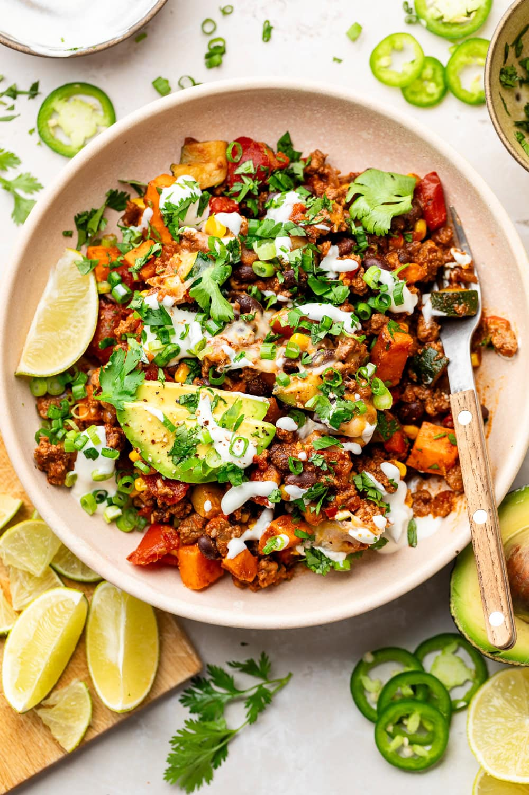

Ingredients
- 2 teaspoons avocado oil
- 1 medium sweet potato, peeled and cut into ½-inch cubes (about 2 cups)
- 1 small zucchini, diced (about 1 cup)
- 1 medium red bell pepper, diced (about 1 cup)
- 1 small red onion, diced (about 1 cup)
- 4 garlic cloves, minced (about 2 teaspoons
- 1 lb lean ground beef
- 1 (15 oz) can black beans, drained and rinsed
- 1 (15 oz) can fire-roasted tomatoes
- 1 cup frozen corn
- 1 packet taco seasoning (or ⅓ cup of homemade taco seasoning)
- 1 cup Mexican-style or monetary jack shredded cheese blend
Directions
- In a large skillet over medium-high heat add the avocado oil and swirl to coat bottom of pan. Add the diced sweet potato and cook, while stirring occasionally, for 4-5 minutes.
- Add the zucchini, bell pepper, onion, and garlic; cook an additional 3-4 minutes or until vegetables are slightly tender.
- Move the vegetables to one side of the skillet and place the ground beef on the other side of skillet. Cook the beef for 7-9 minutes, breaking it into small pieces as it cooks. Drain any excess grease after the ground beef is cooked through.
- Reduce the heat to medium-low and add the black beans, tomatoes (with juice), frozen corn, and taco seasoning. Stir everything together.
- Sprinkle the shredded cheese over top, place the lid on the skillet, remove from heat, and let the cheese melt for about 2 minutes.
- Remove lid, add desired garnishes, then serve.